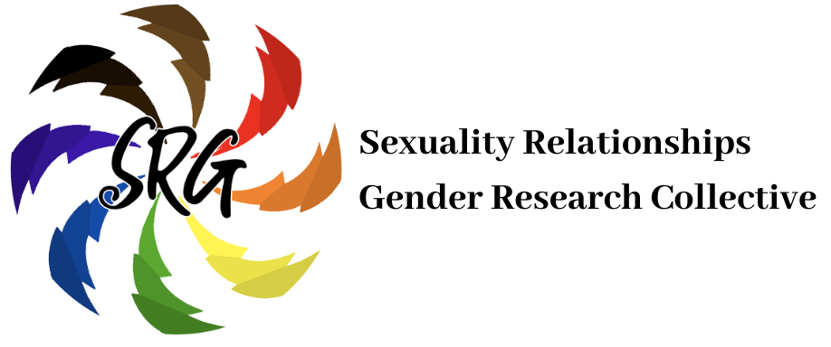

Blog CV
Calendar
November 9-13, 2019
CSCW 2019
Austin, TX
January 27, 2020
Northwestern University invited talk
Chicago, IL
About
I am an Assistant Professor at University of Michigan School of Information
(UMSI). Prior to this position, I was a President's Postdoctoral Fellow at UMSI during 2018-2019. I conduct social computing research focused on how people present and disclose changing
identities on social media during life transitions, with a primary research goal of impacting technological inclusion of marginalized users. One of my main research areas is transgender
identity disclosure and presentation on social media. I am a recipient of a National Science Foundation Graduate Research Fellowship, a Rob Kling Memorial Fellowship, and a Eugene Cota-Robles Fellowship.
I earned my Ph.D. in Information and Computer Science in 2018 from the
Informatics Department at
University of California, Irvine’s
Bren School of Information and Computer Sciences, where I worked with
Gillian Hayes. I received my M.S. in Information and Computer Science from UCI Informatics, and my B.S. in Economics at Carnegie
Mellon University. I also participated in the
iSchool Inclusion Institute (i3). Prior to my academic pursuits, I founded and managed independent bookstores for a number of years. I also toured and recorded as
guitarist, vocalist, and songwriter in several rock bands. I am a big fan of most animals, including cats, which I have, and dogs,
which I hope to have in the future.
Here are some of the groups I am affiliated with at University of Michigan:



Digital Scholars Network